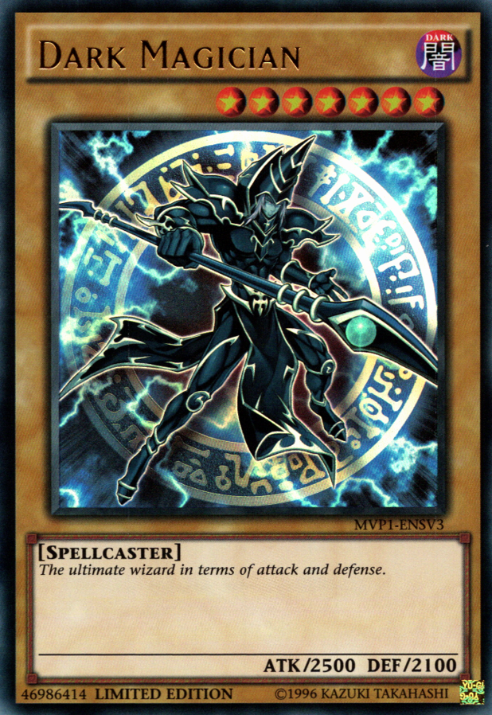

Pokémon TCG
Estilo: Acessível, estratégico e colecionável. Objetivo: nocautear Pokémon adversários para pegar cartas de Prêmio.
O jogo foca em evolução de criaturas, gerenciamento de energias e construção de decks de 60 cartas. Ideal para jogadores que gostam de colecionar arte das cartas e também de partidas rápidas com profundidade crescente.

Yu-Gi-Oh! TCG
Estilo: Dinâmico e combo-centered. Objetivo: reduzir Life Points do oponente a zero através de invocações e efeitos.
Focado em invocações especiais (Fusion, Synchro, Xyz, Link, Pendulum) e combos rápidos. Excelente para jogadores que gostam de sequências táticas complexas e execuções precisas durante o duelo.

Magic: The Gathering
Estilo: Profundo e estratégico. Objetivo: usar mana e sinergias para controlar o campo e reduzir o oponente a zero de vida.
Conhecido por sua variedade de formatos e por exigir planejamento de recursos (mana), Magic é ideal para quem gosta de jogadas de longo prazo, construção de manabases e metajogo competitivo.